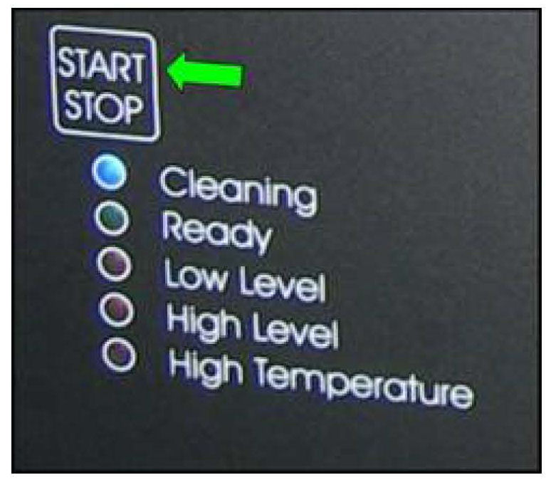
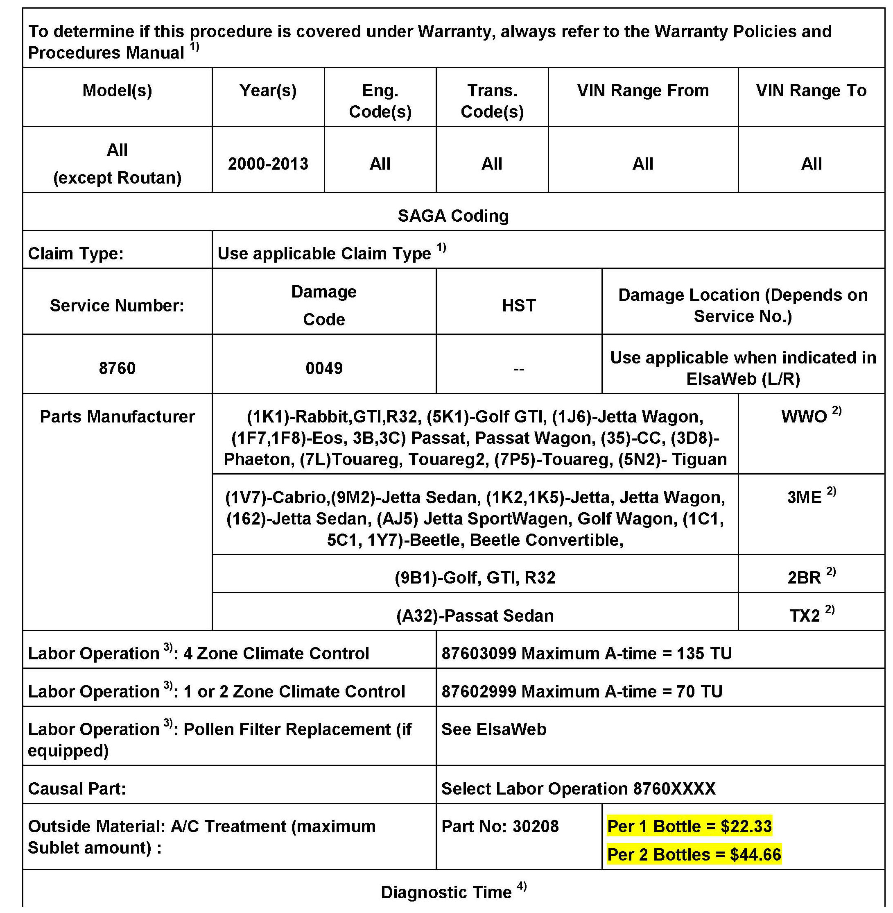
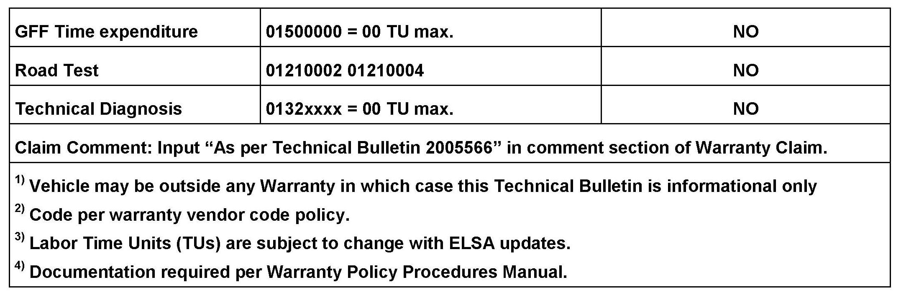

A/C - Unpleasant Odors Coming From Vents
87 12 04April 26, 2012
2005566 Supersedes Technical Bulletin Group 87 number 12-03 dated April 4, 2012 to adjust the A/C treatment sublet amount in the warranty table.

Vehicle Information
Condition
HVAC, Unpleasant Odor
Unpleasant odor is coming from Heating and Ventilation system. Odor mainly occurs after vehicle has been sitting (unused) at least 5 hours and within 20 to 60 seconds after vehicle is first started.
Technical Background
Condensation is a normal characteristic in all A/C systems. If odor is noticeable continue to follow this bulletin.
Production Solution
Not applicable.
Service
Contaminants are effectively neutralized using the AIRCOMATIC II Ultrasonic Climate System Cleaner (VAS 6189A) or AIRCOMATIC III Ultrasonic Climate System Cleaner (VAS 6189B) and AIRCO-CLEAN Ultrasonic
HVAC Treatment (30208). All other cleaning methods are no longer permitted.
There must be an original customer complaint of specified odor symptom on repair order for this Technical Bulletin to apply. Adding this procedure on to another procedure is not permitted.
Tip
If vehicle is a Touareg or Phaeton with 4 zone climate control, the rear A/C unit is to be treated as well. Repeat procedure for rear A/C unit.
Cleaning the Air Conditioning System:
Tip
- No one must be in the passenger compartment.
- Observe the instructions on the cleaner and the cleaning fluid
- The vehicle must not be exposed to the sun
- Remove the pollen filter in the passenger compartment (if equipped)
1. The vehicle should be cool, if necessary cool it down with the air conditioning to about 72°F
2. Dry the evaporator by running the ventilation (air conditioning "OFF") at the highest blower level for about 30 minutes.
3. Remove the activated carbon filter or pollen filter according to the repair manual. Close the cover on the AC duct without filter.
4. Open all vents, align them to the passenger compartment and select them with the control panel.
5. Leave the air conditioning switched off. Set the fan speed to level 1 and switch on the recirculation so air is not brought into the vehicle. Run the engine during the complete cleaning process or switch on the ignition and connect a battery charger.

6. Remove the neck (long black pipe) of air conditioning cleaner VAS 6189A / VAS 6189B and fill with a bottle of cleaning fluid part number 30208 (observe instructions on bottle).

7. Place the air conditioning cleaner on the floor underneath the passenger glove box and point the neck towards the front of vehicle (see illustration).

8. Route the cable of cleaner through the side window to the outside. Close the side window and connect the power cable. A self-test starts; when a green arrow lights up the unit is operational.

9. Start the cleaner (VAS 6189B / VAS 6189B), the warning light "Cleaning" comes on. Close all doors and windows.
10. After about 15 minutes the cleaner switches itself off automatically.
11. Open all windows and doors.
12. Continue to run the ventilation for another 10 minutes.
13. Remove the machine from the vehicle.
14. Install new activated carbon filter or pollen filter.
15. Switch on the air conditioning and run in recirculation air mode until condensed water is discharged under the vehicle.
Tip
By leaving the controller in recirculation, this allows cleaning agent to be flushed from the ventilation duct work.


Warranty

Required Parts and Tools
Additional Information
All part and service references provided in this Technical Bulletin are subject to change and/or removal.
Always check with your Parts Dept. and Repair Manuals for the latest information.